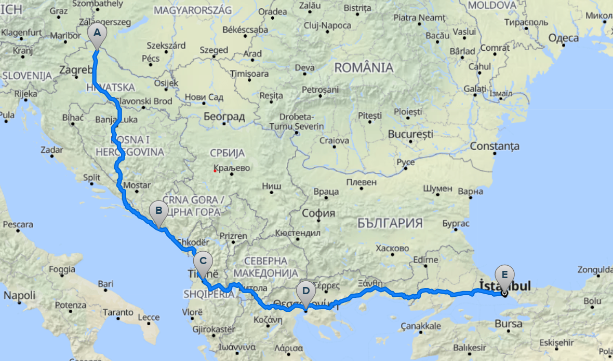

Dotaknuti rub Azije
Nakon ljeta punog planiranja i neizvjesnosti, 7. rujna 2022. krenuli smo u avanturu života. Natovarili smo bicikle, par puta provjerili jesmo li uzeli putovnice i uputili se jugo-istočno prema Istanbulu. U sljedećih 22 dana otpedalirali smo 1900 kilometara kroz sedam država; BiH, Hrvatsku, Crnu Goru, Albaniju, Sjevernu Makedoniju, Grčku i na kraju Tursku. Zašto baš Istanbul? Naša velika želja bila je, po prvi puta u životu, zakoračiti van Europe. Kako smo bili vremenski ograničeni, odlučili smo barem dotaknuti rub Azije. Nismo pogriješili, ogroman grad od 15 milijuna stanovnika nešto je što nikada do sada nismo vidjeli. Kombinacija uređenog europskog grada s ukusnom Balkansko-Azijskom hranom i bogatom kulturom oduševila nas je. Blog svakog dana možete pročitati pritiskom na određeni datum na kalendaru.